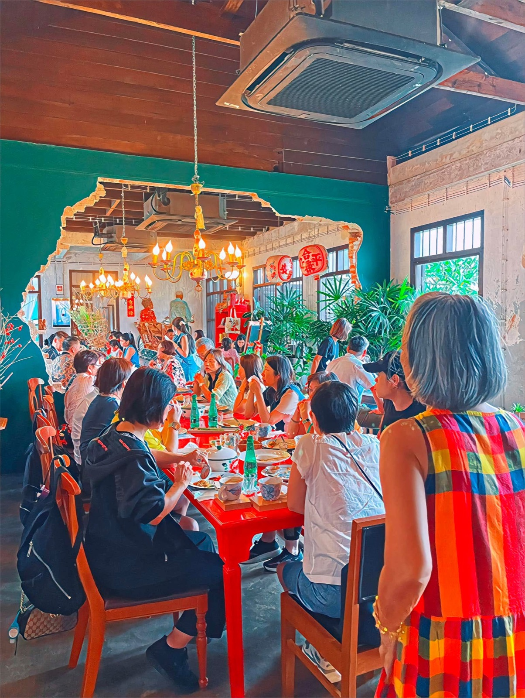

2023 · venture · note
The team serves over a hundred guests while mom manages remotely from Betong

Original text in Thai
คุณแม่ ตั่วจี้ ตัวอยู่เบตง ใจอยู่บ้านอาจ้อ 🥰
วันนี้มื้อเที่ยง ลูกค้าจะเข้าพร้อมกัน 100+ คน ทีมบ้านอาจ้ออยู่เบตงทั้งแก๊ง คุณแม่หวังเหวิด ยกหูตลอด ตั้งแต่นั่งรถกลับมาถึงเบตงยันตอนนี้ น้ำแข็งเรียบร้อยมั้ย 5 ถุงอย่าลืมนะ ใครอยู่เฝ้าโต๊ะแดง หนมหวานเตรียมให้แล้ว ผักลิ้นห่านส่งยังงง ฯลฯ ส่วนจี้ก้อหวังเหวิด ป้ายสวยมั้ย ของหวานหน้าตาดียัง เมื่อคืนนอน 3 ชม แต่จนตอนนี้ยังตาแป๋ว 🥹
วันนี้เชื่อใจทีมงานบ้านอาจ้อ ครูกบ ยายมา ยายแมว และทีมครัว แม่จิ๋ว แม่หญิง แม่ปุ้ย โบตั๋น และทีมเสิร์ฟ ทุกคนพร้อมมม ❤️😇
#โต๊ะแดง 🧧
#บ้านอาจ้อทำได้ 💪🔥